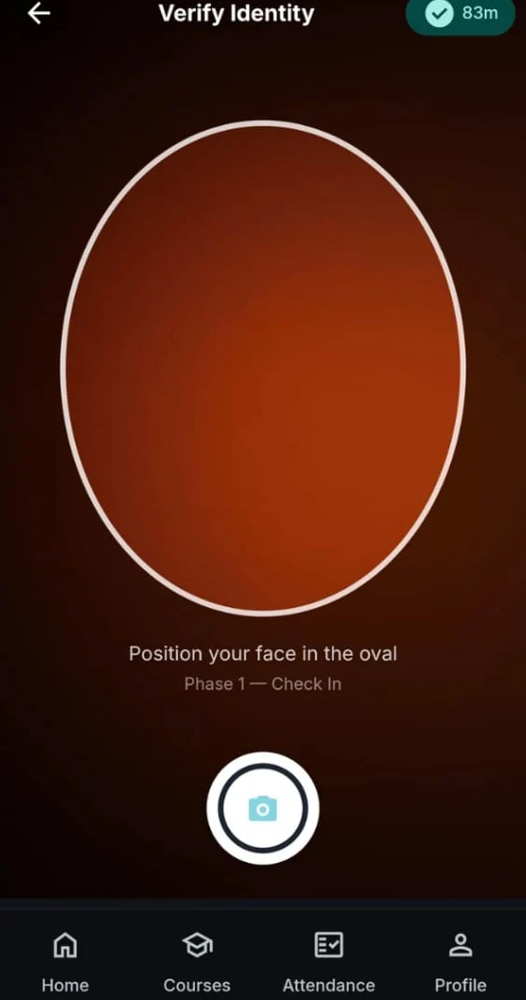

Abdulsamad Ajayi
I build softwaredesign interfacesproduce AI content,
then prove it works. Every project here is a real app, recorded on a real phone.
Things I've built
& designed
A mix of shipped software, product design and AI-produced content. Hover to explore, click for the full story.


Three crafts,
one person
Pick the one that matches what you're hiring for, or get all three.
Software
Full-stack apps, ML pipelines, desktop tools and dashboards in Python, Flutter and Firebase.

Design
Product interfaces in Figma: research, user flows, wireframes and interactive prototypes.

Content
AI-generated short-form UGC for brands: script, voice and render. Skincare first.


I'm a final-year Software Engineering student who likes shipping real things. I spent six months building production tools at NITDA, and I use AI as a teammate at every step, from research to deployment.
I build software that solves problems I've actually run into: exam integrity, attendance fraud, personal finance and campus navigation. My focus is shipping things that work end to end, not just prototypes.
I also run Becoming a Dev, where I teach the AI-assisted process I use to turn ideas into working software.
Download résumé ↓- Claude 101 Mar 2026
- AI Fluency: Framework & Foundations Mar 2026
- Introduction to Modern AI Oct 2025
- Introduction to Data Science Oct 2025
- UI/UX Design
- Python Programming
- Data Science (Beginner & Advanced)
How I work
with you
You don't need to speak tech. Bring a problem or an idea, and here's how it becomes a working product you can hold in your hand.
Start with the problem
A call or a WhatsApp chat about what you want, who it's for, and what's getting in the way today. I keep asking until we agree what "done" looks like.
- A short brief: the problem, the people, the goal you get
- What's in the first version, and what can wait you get
- An honest estimate of time and effort you get
See it before it's built
I map the user flow and design the key screens in Figma, so you can react to something real before any code is written. Changes are cheap here.
- User flow for the main journeys you get
- A clickable prototype you can try on your phone you get
- Your feedback folded in before building starts you get
Build it in small, tested pieces
I build with an AI-assisted workflow: plan a slice, build it, test it, review it, then move on. Small steps mean nothing drifts and problems surface early.
- Regular progress links you can open and try you get
- Security and data rules designed in, not bolted on you get
- Tests on the parts that must never break you get
Prove it works
Every build is tried on a real phone, not just a laptop, and recorded, just like the walkthroughs on this site. You see it working before you sign off.
- A screen recording of the full flow you get
- Testing notes: what was checked and what passed you get
- A last round of fixes from your review you get
Launch, then hand it over
We put it live together, and you get everything you need to own it. Support after launch is agreed up front, so there are no surprises.
- The live app or site, set up on your accounts you get
- The source code and a plain-English guide you get
- A walkthrough so your team can run it you get
Have a problem or an idea? Tell me about it in a message.
Start on WhatsApp ↗